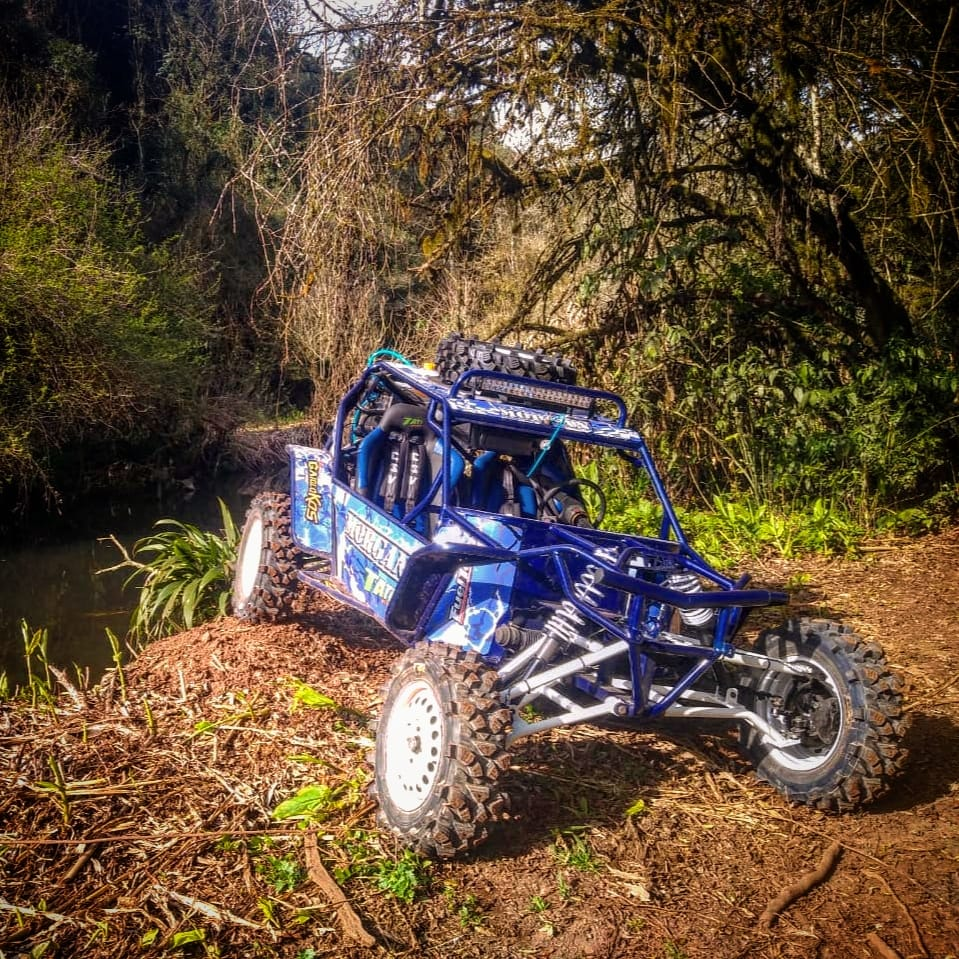

Gaiolas são veículos automotores geralmente construídos de forma artesanal ou industrial, em aço tubular de diâmetros variados. O nome Gaiola se deve ao fato de que o piloto aparenta estar enjaulado e que sua estrutura seja feita de tubos.

A história das gaiolas de trilha
As Gaiolas surgiram na década de 1950, quando surfistas transformavam seus carros pesados em estruturas mais leves, com o objetivo de poder dirigir nas dunas da Califórnia.
Como os veículos foram ficando mais leves com o uso da mecânica da Volkswagen derivada do Fusca, foram introduzidas no Brasil na década de 1980. A variedade de modelos de gaiolas é muito grande, já que são comumente construídas de forma artesanal, dando autonomia para quem a constrói.